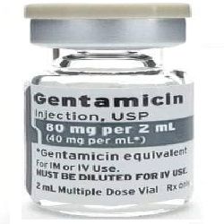

Gentamicin

Gentamicinသည် ဘတ်တီးရီးယားကို သတ်သော ပဋိဇီဝဆေး အမျိုးအစားဖြစ်ပါတယ်။
အဓိကအားဖြင့် ပြင်းထန်သော ဘတ်တီးရီးယားပိုးများ ကုရန်အတွက်သုံးပါတယ်။
ဘယ်မှာသုံးလဲ?
- ဘတ်တီးရီယား ပိုးမွှားများကြောင့်ဖြစ်သော အဆုတ်ရောင်ခြင်း၊ ဦးနှောက်အမြှေးပါးရောင်ခြင်း၊ ကျောက်ကပ်ရောင်ခြင်း၊ အရေပြားပိုးဝင်ရောဂါများ၊ ဝမ်းခေါင်းတွင်း ပိုးဝင်ရောင်ရမ်းခြင်း၊
- နှလုံးအမြှေးပါး ရောင်ရမ်းခြင်း၊ သားအိမ်အတွင်းသား ရောင်ရမ်းခြင်း၊ ရိုးတွင်းခြင်ဆီ ရောဂါပိုးဝင်ခြင်းနှင့် အခြားရောဂါများစွာ တို့တွင် အသုံးပြုပါပါတယ်။
- ထို့အပြင် မီးလောင်သောလူနာများနှင့် ခွဲစိတ်ထားသော လူနာများတွင် ဘတ်တီးရီးယားပိုးများ ဝင်ခြင်းမှ ကာကွယ်ရန်အတွက် ပေးလေ့ရှိပါတယ်။
ဘယ်လိုသုံးရမလဲ?
- သောက်ဆေး၊ ထိုးဆေး၊ လိမ်းဆေး စသဖြင့် မျိုးစုံရှိပါတယ်။
- ဆရာဝန်၏ ညွှန်ကြားချက်ဖြင့်သာ သုံးစွဲသင့်ပါတယ်။
- ရောဂါ အမျိုးအစားပေါ် မူတည်၍ အသုံးပြုပုံ ကွာခြားပါတယ်။ ဆေးပမာဏလည်း ကွာခြားပါတယ်။
ဘေးထွက်ဆိုးကျိုးဘာတွေရှိလဲ?
- အရေးကြီးဆုံးသတိပြုရမည့် ဘေးထွက်ဆိုးကျိုးမှာ-
ကျောက်ကပ်ပျက်စီးစေခြင်း၊ အာရုံကြောများအားနည်းစေခြင်းနှင့် နားပင်းစေခြင်းတို့ဖြစ်ပါတယ်။ ထို့ကြောင့်လည်း ဆရာဝန်၏ ညွှန်ကြားချက်ဖြင့်သာ သုံးစွဲရခြင်းဖြစ်ပါတယ်။
- အခြားသော ဘေးထွက်ဆိုးကျိုးများမှာ –
- နုံချိစေခြင်း
- ခေါင်းကိုက်ခြင်း
- ကြွက်သားများအားနည်စေခြင်း
- အရိုးအဆစ်များ နာစေခြင်း
- ဓါတ်မတည့်ခြင်း
- အရေပြားအကွက်များနှင့် အင်ပြင်များထွက်ခြင်း
- ခေတ္တအသည်းကြီးတတ်ခြင်း
- ပျို့ခြင်း၊ အန်ခြင်း စသည်တို့ဖြစ်ပါတယ်။
ဘာတွေသတိထားရမလဲ?
- သင့်တွင် နားရောဂါများ ကျောက်ကပ်ရောဂါများ ကြွက်သားနှင့် အာရုံကြောဆိုင်ရာ ပြသနာများရှိပါက ဆရာဝန်ကို အသိပေးရန် လိုပါတယ်။
- အကယ်၍ Gentamicinကို သုံးစွဲနေပါက ထိုကာလမျိုးတွင် ကာကွယ်ဆေးများ မထိုးသင့်ပါ။
- ကိုယ်ဝန်ဆောင်များတွင် မသုံးရပါ။
- နို့တိုက်မိခင်များသည် ထိုဆေး အသုံးမပြုခင် ဆရာဝန် နှင့် တိုင်ပင်သင့်ပါတယ်။
- အသက်ကြီးသော လူများတွင် (အသက်၆၀ကျော်) သတိနှင့် သုံးရန်လိုပါတယ်။ ကျောက်ကပ်ကို ပျက်စီးစေနိုင်သောကြောင့် ဖြစ်ပါတယ်။
ဆေးအာနိသင်ဘယ်လိုရှိလဲ?
- Cidofovir, Foscarnet နှင့် Typhoid vaccine (live) စသောဆေးများ၏ အာနိသင်ကို ကျစေသဖြင့် တွဲ မသောက်သင့်ပေ။
- အခြားဆေးများနှင့်လည်း အပြန်အလှန် အာနိသင်များ သက်ရောက်မှုများ ရှိသောကြောင့် ဆရာဝန်၏ ညွှန်ကြားချက်ဖြင့်သာ သောက်သင့်ပါတယ်။
ဆေးသောက်လွန်ရင်ဘာတွေဖြစ်မလဲ?
- နားပင်းခြင်း
- ကျောက်ကပ်ပျက်စီးခြင်း နှင့်
- အာရုံကြောများ ဆိုးရွားစွာထိခိုက်ခြင်းတို့ ဖြစ်စေပါတယ်။
- ထို့အပြင် အခြား ဘေးထွက်ဆိုးကျိုး လက္ခဏာများ ဆိုးရွားပါက သို့မဟုတ် အသက်ရှုရခက်ပါက အဆိပ်ကုဌာန သို့ အမြန်ဆုံးသွားရန် လိုပါတယ်။
- ဆေးများကိုဘယ်ဆေးမဆို ဆရာဝန် သို့မဟုတ် တတ်ကျွမ်းနားလည်တဲ့ ကျန်းမာရေးဝန်ထမ်းများရဲ့ ညွှန်ကြားမှုနဲ့သာ တိတိကျကျသောက်သင့်ပါတယ်။
- မိမိသဘောနဲ့ဆေးဖြတ်ခြင်းရပ်ခြင်းမပြုလုပ်သင့်ပါ။
- ဘေးထွက်ဆိုးကျိုးပြင်းထန်စွာခံစားရပါကဆရာဝန်နဲ့တိုင်ပင်ပါ။